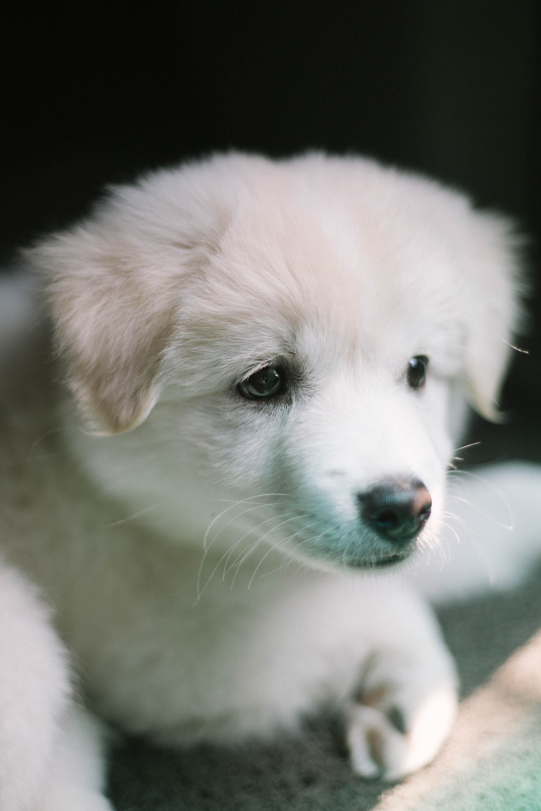

Use of a mark in Bootstrap
Use Ctrl + p to open the Print dialog box.
The cat is a domestic species of small carnivorous mammal. It is the only domesticated species in the family Felidae and is often referred to as the domestic cat to distinguish it from the wild members of the family.

A puppy is a juvenile dog. Some puppies can weigh 1–1.5 kg (2.2–3.3 lb), while larger ones can weigh up to 7–11 kg (15–24 lb). All puppies display primary altriciality and healthy puppies grow quickly after birth. A puppy's coat color may change as the puppy grows older, as is commonly seen in breeds such as the Yorkshire Terrier.
Birds are a group of warm-blooded vertebrates constituting the class Aves, characterised by feathers, toothless beaked jaws, the laying of hard-shelled eggs, a high metabolic rate, a four-chambered heart, and a strong yet lightweight skeleton.